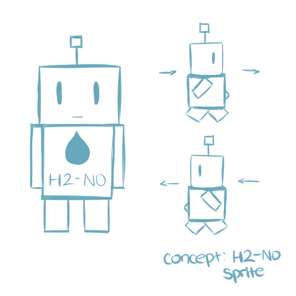

H2-NO: The robot built by Prof. Marina who is sent back to the past to stop water waste and the great disaster from occuring.
Professor Marina: A scientist who is one of the last few humans living on earth after the great disaster occured. She is best friends with the robot she made herself H2-NO. At times she can be quite eccentric.
Summer: A child who seems to be unaware of what could happen if she continues on with her current attitude towards wasting water. She seems to be quite the rascal indeed.